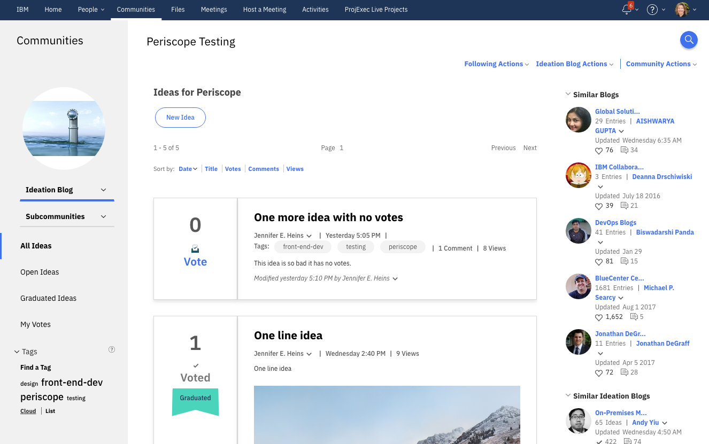
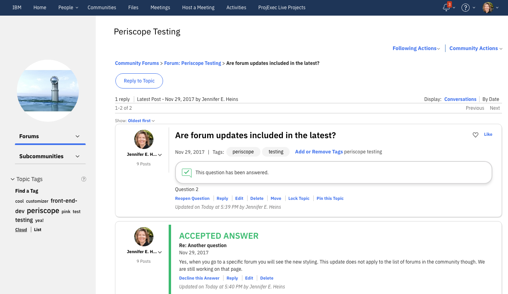

Detailed Update History
Visual Update 1 is generally available for both Cloud and On-premises customers.
This detailed prior update history builds on top of the early adopter code, starting with an October 2018 update.
- Add support for standalone bookmarks app.
Note: Does not style the Add Bookmark dialog, which displays in a separate browser window.
- Update display of Admin buttons that display for managing apps.
- Update display of Community Catalog Add Source dialog.
- Remove use of IBM Plex fonts.
- Update copyright statements, license, and other text for HCL.
- Fix truncated titles in the wikis left navigation panel.
- Fix display issue in Transfer Ownership dialog.
- Fix issue with checkbox display in CEC Highlights apps.
- Fix alignment and size of buttons that display when adding a file to a status update.
- Fix focus-hover display issue on Home page status tabs.
- Fix display of Metrics custom date dialog
- Remove extra border lines from Community success messages
Connections CR4 updates
Updated styles for new features and UI updates that are included with the Connections CR4 release.
- Increase display height for file folder icons in side navigation and file table view.
- Updates for the Upload files, New folder, and share buttons that display in the Community Library application.
- Updates for the Add feed button that displays in the Community Feeds application.
- Updated hover styles for the Discover button that displays in the Community empty state.
- Updated focus style for the help icon when it displays in the Share File dialog in the Files application.
- Updated focus style for the help icon and share checkbox in the Upload files dialog.
- Reduced padding in the Metrics report to ensure display of the two new report icons.
- Added space between the Top updates and Latest updates tabs that now display on the CR4 Home.
- Removed duplicate Welcome to My Drive image.
Community Surveys
Updated styles for dialogs, tables, tabs and other features available with the Community surveys.
- Added support for updating styles that are inside a /surveys/ iframe.
- Updated dialog styles for Survey settings, Import, Add a question, Customize, Search, Export data, and error popups that display while working with surveys.
- Improved display of Featured survey that appears in the Community overview.
- Improved sizing and visual display of Survey responses tables.
- Updated Draft questions view.
- Updated style of Survey icons that are used in the Activity Stream and other places.
Insert Image dialog
Updated styles for the insert image dialog that is available when editing a blog, wiki, or forum post:
- Fixed top padding.
- Fixed spacing above drop zone.
- Fixed right border for image layout choices.
Insert Image dialog
Updated styles for the insert image dialog that is available when editing a blog, wiki, or forum post:
- Border color for the image layout options.
- Top padding to reduce spacing above the dialog title.
- Selected border color for selected image.
Community Wiki
- Updated position of search icon in top right corner to be consistent with other pages and not touch the top navigation bar.
On-premises Action Center
When Action Center is enabled, it applies some styles to all of Connections that have an undesirable effect on our visual style updates. As a result some fixes are being put in to account for the case that Action Center might be enabled.
- Updated Search panel positioning on the right side and set position from top to be relative to the height of the navigation bar.
- Added more specific selectors to style share box to better work with the search panel updates.
Files
- Fixed spacing issue between entries in the left navigation.
- Fixed alignment of checkboxes to be vertically centered.
- Fixed placement of separator bar in toolbar to line up with the right side of the left navigation.
Homepage classic
- Updated min-width for events and meetings notifications on the home page so that they do not extend beyond the page margins.
Navigation bar - Share Box - Styling released
- For On-premises deployments, updated the share dialog that is in the navigation bar.
- Updated Sametime login and logout buttons.
Documentation
- Updated support topic to include a statement on our browser support.
Community Catalog
- Updated styles to also apply to the updated Catalog page and fix an indention issue in the left navigation.
- Updated style of no results text.
Community Members
- Fixed overlapping Add Members fields.
Community Surveys
- Updated style of Browse button when importing a survey.
Files
- Updated Upload Files dialog to remove excess spacing between default options, which was resulting in a vertical scroll bar.
Customization improvements
- Added a new extensions directory and stub files where customers can add their specific style overrides. The extensions stub files are set up to import in to the base styling in the correct order to ensure the custom styles override the existing ones. Documentation needs to be written to provide more guidance.
- Added new variable options, /prereqs/profileform.scss, that controls the layout of the edit profile form.
- Fixed relative paths of partial scss files that are imported.
If you are an early adopter of Visual Update 1, you were using the 'Preview' version. The history of changes to the Preview are listed below.
Each update includes style fixes to previously released apps and pages. Examples of 'style fixes' typically include updates so that elements of the page are not cut off, misaligned, or missing. We continue to update the visual styling in places where we missed it in previous releases. These updates apply to Cloud and On-premises Connections, unless otherwise noted.
General
- Fixed syntax errors in style markup
- Firefox update: Syntax update to fix drop downs and checkboxes that were not picking up the new style.
Activities
- Fixed style of tabs when inserting an image into an activity entry
- Fixed spacing above message that shows when you successfully create an activity
Announcement
- Updated scripts to include the announcement page
- Updated style of the announcement strip that appears on the classic home page
Blogs for on-premises
- Fixed alignment in left navigation when managing blog settings
- Removed extra line that was appearing in the Public Blogs, Blogs Listing view
- Updated Blog administration page
- Updated vertical alignment of Tags label in public blogs list
Business Card
- Updated Chat awareness icon to appear smaller and in the correct location
CK Editor
- Fixed inconsistent tab styling in Flash and iFrame dialogs
- Fixed to honor default font-family that is set by CK editor, so that it appears after content is saved.
- Updated improved insert image dialog used in blogs, forums and wikis
- Updated insert image dialog error styling on a field that is missing a value
Create Community
- Updated padding when creating a sub community from a community with top navigation
Community
- Fixed issues where some links are too close to the right side of the page at different window widths and after visiting certain community apps
- Updated alignment of External members indicators on overview and members pages
- Updated alignment of Access note when creating an external subcommunity
- Fixed alignment of display icons on ideation blogs and events
Community Files
- Fixed issue where Files vertical scroll bar was not on the right side of the window on narrow windows
- Fixed issue where an image was repeating behind the two community file views in the left navigation (result of changes made for 1574)
- Fixed double selected line appear on display options, when new Files UI is enabled
- Enhanced file views to fit the width of the window
- Fixed Upload Files dialog width
Community Overview
- Updated expand and collapse arrows on activities, blogs, and ideation blogs widgets to be consistent with rest of design
- Updated style of form when you are first adding content to the Rich Content widget
- Updated to remove shadow on widgets because it was inconsistent between browsers
Community Recent and Status Updates
- Fixed Post button that had no text visible on it
Community Surveys
- Updated survey icons shown in the list of surveys
Contacts
- Fixed inconsistent style on field when forwarding a contact
Downloads and Setup
- Updated page to remove excess space between sections
Files
- Fixed hover styling to show underline on tags in file list
- Fixed issue in dialog when adding a local file to a folder where the right side of the browse area was cut off.
- In table view, fixed line under select all checkbox to align with others
File Viewer
- Updated like icon in file viewer to match the other icons in the viewer
Forums for on-premises
- Updated app title to be consistent with other apps
- Fixed lists to align column headers with each other
Home - Classic
- Updated success message shown after adding a status update to remove outline, add some space above, and align the close icon
Home - New
- Fixed issue where margins between body and .lotusFrame were not collapsing, resulting in a space between navbar and important to me bar
HCL Docs
- Fixed presentation editor toolbar that was missing tools
Metrics
- Updated for new Date range and Group by options
- Fixed Homepage and Profiles that were missing updated colors on the charts
- Updated style of Top Contributors and Top Followed right column information
My Contacts
- Fixed Cancel button to use secondary button style when adding a note to someone’s contact information
Navigation bar for on-premises
- Updated color of Files icon in apps menu to be consistent with others
- Updated notification panel to fit the height of the window to be consistent with the search panel
- Updated notification panel to remove extra space between image and text when there is no history
- Fixed navigation bar Log In and Language links to be consistent with other links
Notification Settings
- Enhanced notification settings to fit the width of the screen
- Styled tabs on Notification settings
Profiles
- Fixed alignment of plus icon for adding tags to yourself or others
- Fixed placement of newly uploaded profile image that was running off the right side of the screen
- Enhanced edit icon that appears when you hover on your profile picture
- Updated alignment of separator dots between action links
Wiki
- Enhanced New Page button to stand out better in the left navigation
Wiki for on-premises
- For stand-alone wikis, updated alignment of widget titles that appear when viewing public wikis
- Updated alignment of widget titles that appear when viewing public wikis
- Updated action buttons on members page to use secondary button style to be consistent with other buttons
This update includes style fixes and a couple of enhancements to previously released apps and pages.
Visual Update 1 Cloud app now performs faster
- The app configuration has been updated to inject CSS references on each page rather than use JavaScript. This results in much faster performance when the styles load.
- Follow these steps to update the application:
- If you have altered the .json configuration for the application, by adding individual users or additional parameters, it is recommended that you copy your .json changes before continuing.
- If you have not altered the application, continue forward.
- As an administrator, go to Admin > Manage Organization.
- Go to Apps and then My Apps.
- Locate Visual Update 1 for HCL Connections, select the three dot more menu, and Disable it.
- Once the app is disabled, select the three dot more menu again, and Delete the app.
- Switch from My Apps to App Catalog, find the Visual Update 1 app again, and Get it.
- During configuration you can enable it for your entire organization or individuals.
Safari browser specific updates
- Community Wiki: Fixed Safari issue where left navigation entries are cut off
- Community Wiki: Fixed Safari issue where fields in rich text editor dialogs were cutting off text
General
- Fixed variable syntax error in SCSS files that effected left navigation panels
Activities
- Updated style of Activity Templates list
Community Ideation Blog
- Fixed distorted graduated flag when the window is less than 1060px wide
Community Files
- Updated style of empty state strings to match stand-alone files
Files
- Updated Welcome to My Drive to inherit font-family and to use secondary button style on the sync button
- Updated Trash view to be consistent with others
- For New Files: Updated to allow content to fill page when left navigation is closed
Forums for on-premises
- Updated style of matching tags when filtering forums to be consistent with other filters
- Fixed Start a Forum button to not jitter when hovering over it
Profiles for on-premises
- Updated My Links bookmark icon to use the latest
Search results page
- Fixed alignment of "Search index was last updated" date text
This update includes style fixes and a couple of enhancements to previously released apps and pages.
Noteable changes
- In a community, when an owner changes the layout, they will now see an information message, in English only, that says the number of columns displayed will change depending on the width of the window.
- In Files, when using the file picker dialog on Internet Explorer, fixed an issue where the selected file was running of the edge of the dialog.
- In Files, updated image shown in drag and drop empty state.
- In Files and Community Files, updated the style of messages that show when there are no files or folders in a view.
General
- Fixed spacing on ascending and descending table column headers
- Fonts - Move HCL Plex font specifics to a dedicated file to streamline font file
- Navbar: Fixed Sametime chat menu placement to be consistent with others
- Footer fixed to fit the page with no set maximum width
- Footer fixed to have consistent width with other parts of the page
Notification messages
- Added new icons and show them in notifications
Business card for on-premises
- Updated styling of card
- Updated arrow and close icons to be consistent with design
My Network for on-premises
- Updated left navigation and tab styling
- Updated buttons and list styling
Community
- Enhanced Change layout dialog to display note in English only to tell community owners that the number of columns depends on window size
- Add apps and Change layout: Updated to make dialog wider so text does not wrap so soon. Also added separator lines between items
- Add apps: Updated style of tabs for All Applications and Hidden
- Fixed issue where the updated style for the Detele app dialog had regressed to old style
- Updated display icons for Activities, Ideation Blogs, and Events to use the new icons
- Fixed Community Catalog entries to hide vertical bars that were supposed to be hidden
Files
- Updated image shown in drag and drop empty state
- Updated display of messages shown in empty state
- Fixed some entries going bold on hover which was inconsistent with other nav links
- Fixed issue in file picker on Internet Explorer where the selected file was running of the edge of the dialog
- Fixed issue where Keynote presentation icon was not showing in the file viewer
- New Files UI: Fixed unintentional indenting of selected items in the left nav in the new Files UI
- New Files UI: Fixed issue where organization Files label was not truncated when it was long
- New Files UI: Fixed spacing so that long entries in the left navigation don't run off the right side of the panel
Forums for on-premises
- Updated styling of lists of forums and topics
Settings
- Added styling for Downloads and Setup page
Wikis
- Updated add tag buttons in stand-alone wikis list
- Updated Go to Page search field when on the wiki index
- Fixed alignment of left navigation after jumping to a specific page from search in left navigation of index page
- Fixed focus state of Add a comment button that was cut off on the left side
This update includes style fixes and a couple of enhancements to previously released apps and pages. These updates apply to Cloud and On-premises Connections, unless otherwise noted.
With this update we are adding some general styling updates:
- Added styling for stand-alone and community Activities.
Customization improvements
- Added variables to customizethe spacing between entries in left navigation panels through out. This includes updates to the hover and selection bars.
- Added variables to customizefont-weight of links
Activities
- Added styling for stand-alone and community Activities.
Blogs (stand-alone and in communities)
- Updated stand-alone blog left navigation to have consistent styling with other apps
- Changed capitalization of tab text to initial which is consistent with other apps
- Improved consistency of action links that appear with meta information
- Added some space between lines of tags when they wrap, so that the tags don't touch
- Updated stand-alone blog avatars to be round on right side widgets
Create a community
- Improved field spacing when searching for members and how selected members are displayed
Community Files
- Updated inconsistent hover style when in share a file dialog
- Fixed folder hierarchy that was not nesting correctly
Community Metrics
- Fixed issue where chart line colors did not match the app color
- Increased width of chart lines to be easier to see
Community Surveys
- Added spacing between icon and title and status and More link. Made title link color match other views.
Community Overview
- Updated widgets to have same color links regardless of what column the widget is in
- Updated entry and post titles on files and wikis widgets to use link color consistent with other widgets
- Updated members widget to reduce padding in order to show more members
Files
- Fixed issue causing spreadsheet tabs to be unusable
- Fixed issue where new folder icon was not appearing in search panel
- Fixed issue where spreadsheet icon was not appearing in file viewer
- Styled type-ahead field when filtering Folders shared with me by who created the folder
Forums (stand-alone and in communities)
- Updated title field text size to be consistent with other post forms
- Updated styling of stand-alone forums left navigation, buttons, and title of the app o be consistent with other apps
- When no width or height is set on images, scale them to fit the area
Homepage - Classic
- Improve “Saved” indicator to not look like a link when it is not clickable
Search History
- Fixed issue where some entries randomly indented
Wikis (stand-alone and in communities)
- Fixed tabs that appear when editing because they were overlapping the edit area
- Updated table and list styles to be consistent with other apps and fixed column header alignment issue
- When editing HTML Source of a page, Hide Guide won’t cut off the buttons anymore
- Fixed alignment issues on insert image dialog where tabs are cut off
- Updated left navigation of stand-alone app to be consistent with other apps
- Adjusted vertical alignment of checkboxes in Trash view
- Updated spacing and alignment of meta data in the list of wikis
- Updated Insert Connections File dialog to have consistent styling with others
- Fixed alignment of member avatars in left nav of stand-alone wiki
This update includes style fixes and a couple of enhancements to previously released apps and pages.
Customization improvements
If you use this app as a basis for your own customizations, we made improvements to variables which allow you to customize with much less effort.
- Added new variables to control the styling of tabs throughout, including selected, hover, and focus states.
- Added new font-size variables to control size and font-weight together.
- Clean up buttons component to group by style of button, such as primary or secondary.
General
- Updated style of buttons associated with browsing local file system to select a file.
- Improved consistency of sorting options throughout
- Updated top navigation bar to reduce movement when the page loads
- Updated tag clouds to more clearly see the differences between tags
Create a community
- Updated spacing of fields and options in the Access section
- Updated field style for web address (onprem only)
Community Blogs
- When paging through comments, updated jump to page field which was too long
- Fixed posts which had inconsistent padding
- Updated alignment of text in Insert Document Bookmark dialog
- Left aligned titles of widgets on right side of blog page, to be consistent with others
- In manage blog, fixed alignment of column header in the various tables
- Updated graduated flag displayed in list of Ideas
Community Events
- Updated alignment of fields and checkboxes on the form to notify people
Community Files
- Updated alignment of fields and text in Add to Folder dialog
- Fixed alignment and focus on checkboxes in the file list
- Updated folder icons with newer set based on new design.
Community Forums
- Updated alignment of tags when adding tags to a forum
Community Members
- Updated focus style for type ahead field
- Fixed inconsistent styling between inviting and adding a member
- Updated focus style on success messages
- Fixed broken form on more narrow screens
Community Metrics
- Updated alignment of summary info when viewing a table
- Updated to inherit font from customization
Community navigation
- Updated side navigation to use a consistent select, hover, and focus style as other menus throughout
Community Overview
- Improved styling for images, text, and links in tables in Community Description and Rich Content widgets
- Fixed issue with images not scaling in Community Description and Rich Content widgets
- Fixed inconsistent tag styling in some layouts
- Fixed inconsistent font-weight in Bookmarks widget between layout options
- Reverted Rich Content widget back to original styling, which is to allow content to run edge-to-edge
- Updated vertical alignment of meta data on widgets
- Updated Subcommunity widget to display icons as circles to be consistent with the rest
- Many responsive updates to improve when a 3 column page breaks to 2 columns, and then 1 column. Here are the approximate number of columns you will see depending on the width of the window you are using:
- 3 columns = 1271px and higher
- 2 columns = 1270px - 900px
- 1 column = 899px and less. The minimum width is 800px so anything less will display a horizontal scrollbar.
Community Wikis
- On a wiki page, added space that was missing between tags label and the word None
- On a wiki page, updated alignment of “Like” meta data to be on the same line as the other metadata
- When editing a page, fixed Select Color dialog that was missing field to enter color value.
- When editing a page, updated spacing between form elements in insert image dialog.
Files
- On list view, enhanced to display actions on the right, closer to the More link you click to view the actions.
- On file viewer, fixed split button alignment issue on certain files shared with a community.
- Updated issue with long folder names disappearing.
- Updated folder icons with newer set based on new design.
Homepage - Classic
- Fixed search icon that was not visible because it was white on white
- Updated metadata to appear evenly on one line
- Updated to wrap the tabs when the screen is more narrow
- Updated responsive design for widths near 800px
Search results
- Update appearance of ideation blog graduated flag to be consistent with new design
Stand-alone Blogs (On-premises only)
- Updated list of blogs to use the new styling
- Updated tabs to use the new styling
Stand-alone Wikis (On-premises only)
- Updated button styling throughout to be consistent with the rest
- Updated alignment of fields when starting a new wiki
With this update we are adding some general styling updates:
- Community pages and apps are updated with new styling (except Activities)
- Another round of responsiveness page updates to support more narrow windows
You will also see some updates and enhancements to previously released apps and pages.
General
- Updates to consistently reference new pinned icon
- Updated periscope.js to include /communities/
- Improve consistency of commenting fields across community apps
- Enhance tags widget to only show a link for the alternate view option
- Fix some left navigation alignment issues
Community catalog page
- Fix tag styling on Safari
- Fix tags header alignment in left navigation
Files
- Fix overlapping file type icons
- Fix missing file type icons
- Improve readability of text in file and folder pickers
- Fix display of long text, such as organization name, in left navigation
- Fix issue with select all checkbox alignment
- Center New button over left navigation
- File viewer: Update tabs to match style guide
- File viewer: Update to show missing drop down arrow next to More tab
Forum
- Fix visual issue in Add Image dialog
Profiles
- Wrap text when the window is more narrow
Search
- Enhance community icons to be round
- Add updated Events icon
- Update styling of filter apply button
Wiki
- Improve layout of Move dialog
- Fix sizing issue on inserted images
- Remove shifting in the left navigation
With this update we are adding some general styling updates:
- Improved responsiveness for more narrow screens which limits the occurrence of horizontal scroll bars
- Updated styling of dialogs related to the rich text editor
- More easily customize the navigation bar via a set of centralized variables
You will also see some updates and enhancements to previously released styling.
General
- Updated style of close icon on dialogs
- Improved styling for keyboard focus
Files
- Fixed issue with Add Files dialog on Firefox
- Fixed styling issue with My Drive empty state
- Updated drop down arrow in File Viewer when viewing a community file
New Home page
- Updated to use HCL Plex font
Wikis
- Updated ability to resize wiki left navigation
- Rounded avatars in wiki comments
- Updated attachment and version tables
- Updated file type icons in attachments list
- Fixed alignment of arrows in Move page dialog
- For on-prem: Fixed wiki Save buttons
With this update we are adding styling to the following applications and pages:
- Communities landing page and create community (added late March 2018)
- Edit Community (added late March 2018)
- Classic Home with Activity Stream (added late March 2018)
You will also see some updates and enhancements to previously released styling.
General
- Update to not override styling added via the CK Editor, such as font-family, font-weight, and table borders
- Update for names to appear in black
- Update to show current selected sort as black
- Update to consistently style menus across apps
- Update Notification Settings URL in periscope.js
- Preview: Enhancement to customize the Like icon -- Incomplete, more work needed
- Enhanced Community application drop down to not cut off if the page does not have much content
- Enhanced Community headings to be consistent across pages and across apps
On-premisis
- Updates to fix styling of the navigation bar
Blog / Ideation Blog
- Enhanced archive list to be scrollable
- Update table sort headers
- Update search history field
- Update alignment of entries in the left navigation
- Update Notify Other People section
- Update tables inside posts
Files
- Update for Safari to show missing user field when sharing a file
Forum
- Update color in forum menus
- Update tags in Edit Forum popup
- Update background on lists in accpeted answers
- Update styling on add image popup
Profiles
- Update to comments in activity stream
Wiki
- Update spacing of tags
- Update long titles in left navigation to truncate
- Update meta data on comments
With this update we are adding styling to the following applications and pages:
- Community Blog (added late February 2018)
- Community Wiki (added late February 2018)
- Community Ideation Blog - Applies within an Ideation Blog, not Ideation Blog list page (added late February 2018)
- Community Forum - Applies within a Forum, not Forum list page (added late February 2018)
- New Home page (added late February 2018)
You will also see some updates and enhancements to previously released styling.
Community Wiki styling added
- Enhanced Add a Comment to be a button.
- Enhanced editor HTML Source and Rich Text tabs to be in the same location for blogs, wikis, and forums.
Community Blog & Ideation Blog styling added
Note: Only applies within a specific Ideation Blog and not to the page that lists multiple Ideation Blogs within the Community.
- Enhanced Add a Comment to be a button.
- Enhanced to simplify visuals in the Manage Blog navigation.
- Enhanced blog and ideation blog stream to clearly separate each blog post, improving readability.
- Enhanced to scale images in blog and ideation blog posts so you can see more without scrolling.
- Enhanced ideation blog to hide the vote link when frozen.
- Enhanced ideation blog to style the graduated flag like a ribbon.
- Enhanced editor HTML Source and Rich Text tabs to be in the same location for blogs, wikis, and forums.
Figure 1: Ideation Blog

Community Forum styling added
Note: Only applies within a specific Forum and not to the page that lists multiple Forums within the Community.
- Enhanced how Accpeted answers are displayed.
- Enhanced how pinned topics are displayed.
- Enhanced editor HTML Source and Rich Text tabs to be in the same location for blogs, wikis, and forums.
Figure 2: A Forum topic thread

New Home page, also known as Orient Me, styling added
- Enhanced to add outline to actual thumbnails to help when a file has a white background.
- Added the new file type icons when a file thumbnail is not available.
Enhancements to Profiles
- Enhanced Network widget with larger pictures and names.
- Enhanced Tags widget that scrolls in place, allowing you to more easily see the Things in Common widget.
- Rounded avatars on reporting structure page.
Updates to Files
- File extension .ico will now display the image file type.
- Update to hide stray line when Files is loading.
- Updated style of Files drag and drop.
- Updated file picker to not cut off messages.
- Updated display option icons with new ones.
- Updated File picker to show remove file action that was missing.
Enhancements to Notification Center
- Enhanced to make full height of the window so you can see more.
- Enhanced to scale images in comments so you can see more without scrolling.
- Enhanced to show "No comment provided" instead of empty quotes.
General updates
- Update buttons with the latest design which includes updated hover and focus states.
- Update dialogs with the latest design which includes removing the blue and gray bars from the top and bottom.
- Update checkboxes to show the brand color when checked.
- Update messages with the latest design which includes a white background and shadow.
- Update square avatars to be round and consistent across Connections.
- Update just in time and guided tours where ever visual updates are enabled.
- Updated people's names to be black to reduce disruption when reading.
General updates
- Update hover & focus on special buttons
- Update modal dialogs based on latest in design guide
- Keyboard focus updates
- Updated checkbox to pull brand-01 when checked
- Update button hover and focus based on design guide
- Add .ico as image file type
Files and File Viewer updates
- Fix icons in file viewer toolbar
- Fix share buttons in file viewer
- Hide random line on Files loading screen
- Update style of Files drag and drop
- Update Files focus on folder breadcrumbs
Profile updates
- Update focus on profile status update buttons
Initial release of the Visual Update 1 for HCL Connections application.
The HCL Collaboration Solution's Design team is crafting a new, modern, design language for HCL Connections in an effort to ensure that our solutions match the way we think, augment our performance, and grant us the confidence we need to get our jobs done.
We are opening up a preview of the new design, within HCL Connections. The new design creates a modern, airy, and less cluttered appearance by updating many items on a page, such as lists, forms, buttons, and icons. This preview applies to the following applications and pages:
- Files
- File viewer
- Profiles
- Contacts
- Search results page
- Meetings launch page, but not the meeting room
- Notification Settings
- Navigation bar for the above applications and pages
- Notificaiton Center for the above applications and pages